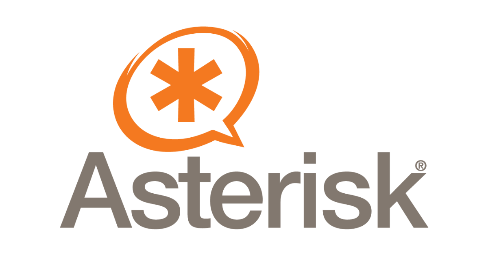
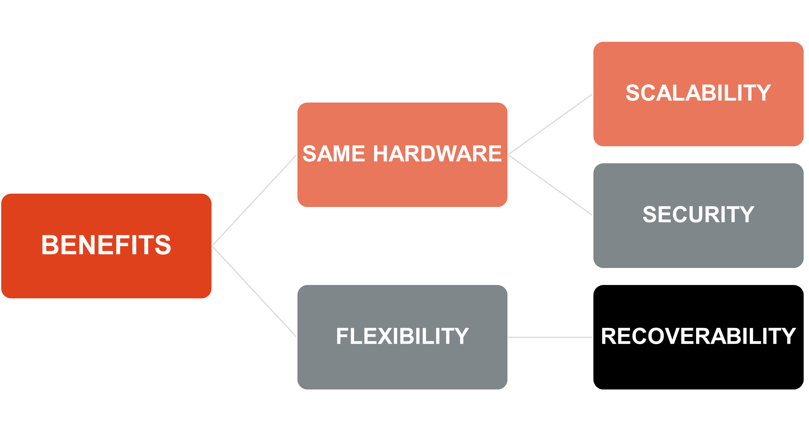
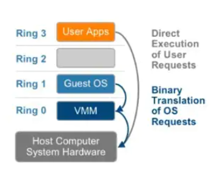
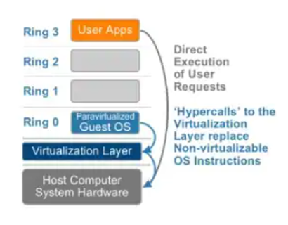
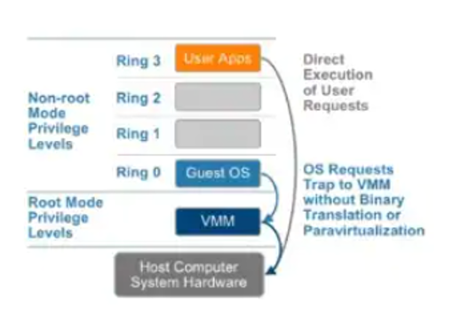

La Undecima semana es la tercera semana en la torre de Linux.

Asterisk
Asterisk es un sistema telefonico avanzado a través de IP mejor conocido como VoIP, fue creado por Mark spencer en 1999, la versión 1.0 fue lanzada en el año 2004, fue diseñado originalmente para correr en Linux, fue escrito en C, soporta SIP, IAX2, H.323.
Las llamadas pueden ser controladas por sistemas externos como AGI o ARI, puede ser adiministrado por AMI, soporta interfaces telefonicas con las tarjetas de hardware. Finalmente las llamadas pueden ser virtualizadas
Originalmente se creó para el sistema operativo GNU/Linux, pero Asterisk actualmente también cuenta con versiones para los sistemas operativos BSD, Mac OS X, Solaris y Microsoft Windows. También se ha creado posteriormente una versión comercial.
Principales Caracteristicas
- Posibilidad de integración con el sistema de telefonía analógica: al ser una centralita mixta, es compatible tanto con líneas de telefonía tradicional como con telefonía IP
- Soporta cualquier protocolo estándar: SIP (Session Initiation Protocol), H.323 – MGCP (Media Gateway Control Protocol), IAX2 (Inter-Asterisk eXchange) o SCCP (Cisco Skinny)
- Soporte de todos los codecs estándar: ADPCM , G.711, G.723.1, G.726, G.729A/B (Con licencia), GSM, ILBC, LineaR, LPC-10 o Speex.
- Es completamente flexible: el software está pensado para que pueda funcionar por módulos, por lo que cada empresa puede personalizarlo, según sus necesidades, y a medida que estas varíen, ir implementando otras funcionalidades.
- Sencillez de uso: admite Interfaces de integración, como FreePBX para Asterisk, que es una aplicación diseñada específicamente para Asterisk. Esta hace que el manejo de Asterisk sea mucho más fácil, ya que la utilización del software, sin este tipo de complementos, es bastante complicada. Otra opción es que contrates a un proveedor de IP que gestione tu sistema de telefonía basado en Asterisk. El proveedor se encargará de configurar tu software. Además, así contarás con un servicio de atención al cliente y de mantenimiento técnico.
Servicios esenciales que ofrece Asterisk
- Buzón de Voz: Las llamadas que no pueden ser atendidas serán contestadas y guardadas por un buzón de voz
- Llamadas en espera: Se puede indicar al emisor de la llamada que el telefono está ocupado
- Posibildad de diseñar una IVR: Podemos crear un menu de voz interactivo, como un mensaje de bienvenida.
- Marcación Directa: No es necesario marcar el número se puede realizar directamente clickando en el telefono quenos aparezca en un programa de gestión
- Colas de Llamada: Importantes cuando existe un número elevado de llamadas en espera
- Registro de llamadas detallado: Realiza un registro de la llamadas tanto emitidas como recibidas
- Grupos de llamadas: Esta función permite que una llamada sea recibida en multiples telefonos a la vez
- Mensajes de voz: Se pueden crear mensajes de voz para ser enviados via e-mail o sms.
Virtualización
- Server Virtualization: Permite correr multiples maquinas virtuales en un único servidor físico
- Desktop Virtualization: Permite correr multiples escritorios en una única máquina física y distribuirlos
- Application Virtualization: Permite Correr multiples copias de una aplicación a través de un único servidor físico
Hypervisores
Existen distintos Hypervisores, algunos pagos o algunos open-source, pagos como VMware ESXi o libre como Xen Project que está siendo soportado por la fundación Linux.
Existen muchos beneficios para utilizar una virtualización y es que permite escalar de manera rapida, y tener una alta disponibildad en casos de fallos del sistema.
Tecnicas de virtualización
Virtualización completa del hardware
Cada máquina virtual puede ejecutar cualquier sistema operativo soportado por el hardware real del sistema. Así los usuarios pueden ejecutar dos o más sistemas operativos distintos simultáneamente en computadoras "privadas" virtuales, pero siempre que dichos sistemas operativos puedan funcionar en la arquitectura hardware de la maquina física. Así, por ejemplo, en un PC (arquitectura x86) podemos instalar máquinas virtuales para correr Windows, Linux, MacOS, etc. Sin embargo, no podríamos correr sistemas operativos que no puedan funcionar en arquitecturas x86 como sería por ejemplo un IBM AIX.
Virtualizacion de emulación de hardware no nativa
Las máquinas virtuales también pueden actuar como emuladores de hardware, permitiendo que aplicaciones y sistemas operativos concebidos para otras arquitecturas de procesador se puedan ejecutar sobre un hardware que en teoría no soportan.
Por ejemplo, si ejecutamos en un PC un emulador de la consola de juegos Nintendo 64, estamos creando una máquina virtual que emula la arquitectura de dicha consola sobre la arquitectura x86 de nuestro PC.
Algunas máquinas virtuales que usan esta técnica, aprovechan para emular un hardware que sólo existe como una especificación, es decir, un hardware común teórico. Esta técnica la utiliza por ejemplo la máquina virtual de Java, permitiendo así que el mismo programa se pueda ejecutar en un PC, en un móvil o en una consola de juegos. La misma técnica utiliza el motor de la máquina virtual de .NET.
Virtualizacion a nivel de sistema operativo
Esta técnica consiste en dividir una computadora en varios compartimentos independientes de manera que en cada compartimento podamos instalar un servidor. A estos compartimentos se los llama "entornos virtuales". Desde el punto de vista del usuario, el sistema en su conjunto actúa como si realmente existiesen varios servidores ejecutándose en varias máquinas distintas. Dos ejemplos son las zonas de Solaris (Solaris Zones) y la técnica de Micro Partioning del IBM AIX.
Storage
Block storage es otro nombre para lo que linux llava dispositivos de bloques. Un dispositivo de bloque es una pieza de hardware que puede ser utilizado para almacenar información, como un HDD o un SDD. Es llamado block device porque la interfaz del kernel con el hardware es referenciado bloques de tamaño fijo o chunks de espacio.
En otras palabras, block storage es un disco de almacenamiento regular dentro de la computadora. Una vez está seteado actua como una extensión del arbol de archivos del sistema, y puedes leer y escribir de manera sencilla con otras monturas.
Que son particiones?
Las particiones son una forma de dividir un disco en pedazos más pequeños. Una partición es una sección del almacenamiento que puede ser tratado logicamente como si fuera un disco aparte. El particionamiento permite segmnetar el espacio disponible y usar cada partición para propositos diferentes. Esto da al usuario una mayor flexibilidad permitiendole asignar distintos sistemas operativos, espacio swap o filesystems personalizados.
MBR vs GPT
Cuando se particiona un disco es importante saber acerca del formato que se utilizará en la partición. Esto generalmente viene en dos formatos MBR (Master Boot Record) y GPT( GUID Partition table)
MBR tiene alrededor de 30 años, debido a su edad tiene muchas limitaciones. Por ejemplo, no puede ser utilizado en discos mayores a 2Tb y puede ser particionado máximo en 4 segmentos
GPT es un formato de partición más moderno que resuelve muchas de limitaciones propuestas por MBR, soporta muchas más particiones que MBR. Esto usualmente está limitado por el sistema operativo mismo. Adicionalmente el tamaño del disco no es una limitación con GPT. En muchos casos GPT es una mejor opción que MBR